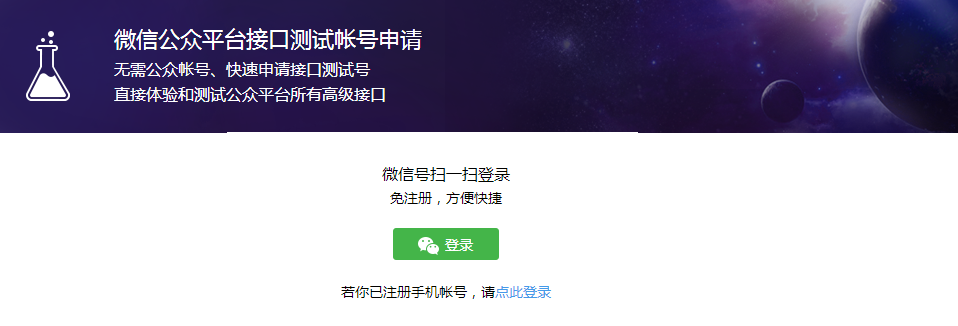
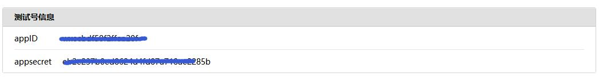
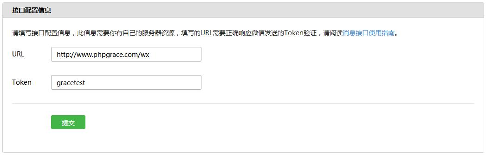
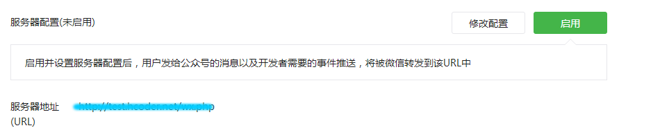

1. 开发者测试环境
1.1 打开微信公众平台接口测试地址并登陆
地址 : https://mp.weixin.qq.com/debug/cgi-bin/sandbox?t=sandbox/login

1.2
部署微信开发者服务器,如：
|_ 根目录 |_phpGrace |_ tools |_ graceWeChat.hp |_ ....... |_ app |_ controllers |_ wx.php //控制器 |_ ....... |_ index.php
1.3 获取开发者信息并更新到配置文件 graceWeChat.php
define('GWECHAT_APPID', '******'); //公众号APPID
define('GWECHAT_APPSECRET', '******'); //公众号APPSECRET
define('GWECHAT_VALIDTOKEN', '******'); //Token 用于接口认证以上配置对应的值可以在登陆微信公众平台测试中心获取，如下图：

1.4 编写接口认证代码,如：/app/controllers/wx.php
<?php
class wxController extends grace{
public function index(){
$gracewechat = tool('graceWeChat');
$gracewechat->valid();
}
}
1.5
开发者接口认证
点击修改接口配置信息，填写您的服务器url、token 信息，完成认证即可！

2. 正式公众号开发
2.1 登陆公众号 2.2 点击开发 -> 基本配置 -> 修改配置/启用 2.3 根据要求填写服务器地址及token完成认证。

验证完成后，删除验证方法
<?php
class wxController extends grace{
public function index(){
$gracewechat = tool('graceWeChat');
//继续后面的代码
}
}